<!DOCTYPE html>
<html>
  <head>
    <title>24 00 032 Removing and Installing Automatic Transmission (GA6L45R) — 2011 BMW 128i Coupe (E82) L6-3.0L (N52K) Service Manual | Operation CHARM</title>
    <meta name='description' content="Detailed repair manual for the 2011 BMW 128i Coupe (E82) L6-3.0L (N52K).">
    <link rel='stylesheet' href="../style.css">
    <meta name='viewport' content='width=device-width, initial-scale=1.0' />
  </head>
  <body>
    <div class='theme-colors header'>
      <div class='branding'><b>Operation CHARM</b>: Car repair manuals for everyone.</div>
<div class=breadcrumbs><a class='breadcrumb-part' href="../">Home</a> <b>&gt;&gt;</b> <a class='breadcrumb-part' href="../BMW/">BMW</a> <b>&gt;&gt;</b> <a class='breadcrumb-part' href="../BMW/2011/">2011</a> <b>&gt;&gt;</b> <a class='breadcrumb-part' href="../index.html">128i Coupe (E82) L6-3.0L (N52K)</a> <b>&gt;&gt;</b> <a class='breadcrumb-part' href="0.html">Repair and Diagnosis</a> <b>&gt;&gt;</b> <a class='breadcrumb-part' href="0.html#Transmission%20and%20Drivetrain/">Transmission and Drivetrain</a> <b>&gt;&gt;</b> <a class='breadcrumb-part' href="0.html#Transmission%20and%20Drivetrain/Automatic%20Transmission%2FTransaxle/">Automatic Transmission/Transaxle</a> <b>&gt;&gt;</b> <a class='breadcrumb-part' href="0.html#Transmission%20and%20Drivetrain/Automatic%20Transmission%2FTransaxle/Service%20and%20Repair/">Service and Repair</a> <b>&gt;&gt;</b> <a class='breadcrumb-part' href="0.html#Transmission%20and%20Drivetrain/Automatic%20Transmission%2FTransaxle/Service%20and%20Repair/Removal%20and%20Replacement/">Removal and Replacement</a> <b>&gt;&gt;</b> <a class='breadcrumb-part' href="948.html">24 00 032 Removing and Installing Automatic Transmission (GA6L45R)</a></div></div>
<div class="theme-colors floaty-message lemon-message">
  <b style="font-size: 1.5em; color: gold">Manuals through 2025 now available!</b>
  <br><br>
  Our trusted friends have launched a new website named LEMON, which has newer manuals. It also contains all the CHARM manuals.
  <br><br>
  LEMON is the spiritual successor to  CHARM, I recommend you try it!
  <br><br>
  Link: <a style='white-space: nowrap' href="../missing-page">lemon-manuals.la</a> or <a style='white-space: nowrap' href="../missing-page">lemon-manuals.org.ua</a>
  <br><br>
  (Some people have issue connecting. LEMON is investigating. For now, use Firefox or change your DNS server)
  <br><br>
  Or, hide this message: <a href="../missing-page">temporarily</a> or <a href="../missing-page">permanently</a>
</div>
<div class='main'>
<h1>24 00 032 Removing and Installing Automatic Transmission (GA6L45R)</h1><b>24 00 032 Removing and installing automatic transmission (GA6L45R)</b><br><br><span class='indent-2'>&#09;</span><b>Special tools required:</b><br><br><div class='oxe-image'></div><br><br><br><br><span class='indent-2'>&#09;</span><b>Important!</b><br><span class='indent-5'>&#09;</span>After completion of work, check transmission oil level.<br><span class='indent-5'>&#09;</span>Use only the approved transmission fluid.<br><span class='indent-5'>&#09;</span>Failure to comply with this requirement will result in serious damage to the automatic transmission!<br><br><div class='oxe-image'></div><br><br><br><br><span class='indent-2'>&#09;</span><b>Important!</b><br><span class='indent-5'>&#09;</span>Aluminium-magnesium materials.<br><br><br><span class='indent-5'>&#09;</span>No steel screws/bolts may be used due to the threat of electrochemical corrosion.<br><span class='indent-5'>&#09;</span>A magnesium crankcase requires aluminium screws/bolts exclusively.<br><span class='indent-5'>&#09;</span>Aluminium screws/bolts must be replaced each time they are released.<br><span class='indent-5'>&#09;</span>Aluminium screws/bolts are permitted with and without colour coding (blue).<br><span class='indent-5'>&#09;</span>For reliable identification:<br><span class='indent-5'>&#09;</span>Aluminium screws/bolts are not magnetic.<br><span class='indent-5'>&#09;</span>Jointing torque and angle of rotation must be observed without fail (risk of damage).<br><br><div class='oxe-image'></div><br><br><br><br><span class='indent-2'>&#09;</span><b>Necessary preliminary tasks:</b><br><span class='indent-2'>&#09;</span>^<span class='indent-5'>&#09;</span>Disconnect battery negative lead<br><span class='indent-2'>&#09;</span>^<span class='indent-5'>&#09;</span>Remove front underbody protection<br><span class='indent-2'>&#09;</span>^<span class='indent-5'>&#09;</span>Remove rear underbody protection<br><span class='indent-2'>&#09;</span>^<span class='indent-5'>&#09;</span>If necessary, remove fan cowl<br><span class='indent-2'>&#09;</span>^<span class='indent-5'>&#09;</span>Remove complete exhaust system<br><span class='indent-2'>&#09;</span>^<span class='indent-5'>&#09;</span>Remove heat shields<br><span class='indent-2'>&#09;</span>^<span class='indent-5'>&#09;</span>Support engine with lifter when removing transmission<br><br><br><div class='oxe-image'>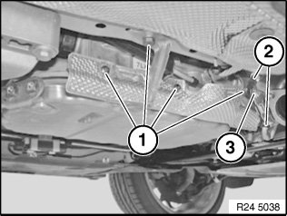</div><br><br><br><br><span class='indent-2'>&#09;</span>Release screws (1).<br><br><span class='indent-2'>&#09;</span>Remove bracket and heat shield.<br><br><span class='indent-2'>&#09;</span>Unclip lines (2).<br><br><span class='indent-2'>&#09;</span>Remove bracket (3).<br><br><div class='oxe-image'>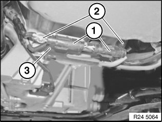</div><br><br><br><br><span class='indent-2'>&#09;</span>Disconnect plug connector (1).<br><br><span class='indent-2'>&#09;</span>Unfasten screws (2).<br><br><span class='indent-2'>&#09;</span>Remove retaining plate (3).<br><br><span class='indent-2'>&#09;</span>Tightening torque 24 00 2AZ.<br><br><div class='oxe-image'>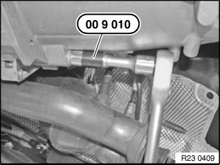</div><br><br><br><br><span class='indent-2'>&#09;</span>Release aluminium screws on right next to cable retaining plate with special tool 00 9 010.<br><br><span class='indent-2'>&#09;</span>Aluminium screws must be replaced.<br><br><span class='indent-2'>&#09;</span>Tightening torque 24 00 2AZ.<br><br><div class='oxe-image'>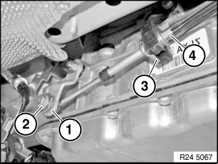</div><br><br><br><br><span class='indent-2'>&#09;</span>Grip clamping sleeve (1).<br><br><span class='indent-2'>&#09;</span>Loosen nut (2).<br><br><br><span class='indent-2'>&#09;</span>Detach retainer (3) downwards using a screwdriver.<br><br><span class='indent-2'>&#09;</span>Pull cable (4) out of holder.<br><br><span class='indent-2'>&#09;</span><b>Installation:</b><br><span class='indent-2'>&#09;</span>Adjust gearshift lever.<br><br><div class='oxe-image'>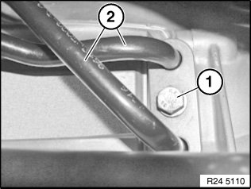</div><br><br><br><br><span class='indent-2'>&#09;</span>Release screw (1).<br><br><span class='indent-2'>&#09;</span>Disconnect hydraulic lines (2) to transmission fluid cooler.<br><br><span class='indent-2'>&#09;</span><b>Installation:</b><br><span class='indent-2'>&#09;</span>Replace sealing rings.<br><br><div class='oxe-image'>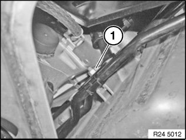</div><br><br><br><br><span class='indent-2'>&#09;</span>Release nut (1) and bracket from transmission oil lines on oil sump.<br><br><div class='oxe-image'>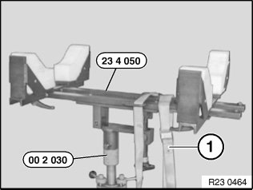</div><br><br><br><br><span class='indent-2'>&#09;</span><b>Supporting transmission:</b> <br><span class='indent-2'>&#09;</span>Support transmission with special tools 23 4 050, 00 2 030.<br><br><br><span class='indent-2'>&#09;</span>Secure transmission to mounting with tensioning strap (1).<br><br><span class='indent-2'>&#09;</span>Tasks are described in Transmission bracket.<br><br><span class='indent-2'>&#09;</span>After completion of work, check transmission oil level.<br><br><div class='oxe-image'>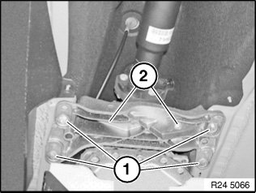</div><br><br><br><br><span class='indent-2'>&#09;</span>Unfasten screws (1) and nuts (2).<br><br><span class='indent-2'>&#09;</span>Remove transmission cross-member.<br><br><span class='indent-2'>&#09;</span>Tightening torque 24 71 1AZ.<br><br><div class='oxe-image'></div><br><br><br><br><span class='indent-2'>&#09;</span>-<span class='indent-5'>&#09;</span>Remove propeller shaft.<br><br><span class='indent-2'>&#09;</span><b>Important!</b><br><span class='indent-5'>&#09;</span>Do not allow propeller shaft to hang from fixed ball joint (risk of damage).<br><br><div class='oxe-image'>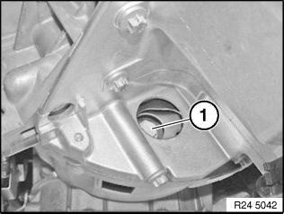</div><br><br><br><br><span class='indent-2'>&#09;</span>Crank engine at vibration damper in direction of rotation until screw (1) is visible in opening.<br><br><span class='indent-2'>&#09;</span>Release all bolts of torque converter with special tool 24 1 110.<br><br><span class='indent-2'>&#09;</span>Crank engine further and release remaining 5 bolts.<br><br><span class='indent-2'>&#09;</span>Tightening torque 24 40 1AZ.<br><br><div class='oxe-image'>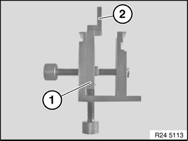</div><br><br><br><br><span class='indent-2'>&#09;</span>Prepare special tool (1) 24 4 161 with shaped element (2) 24 4 165.<br><br><div class='oxe-image'>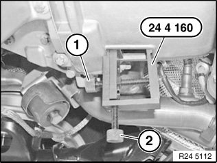</div><br><br><br><br><span class='indent-2'>&#09;</span>Insert special tool 24 4 160 in recess of transmission housing and tighten slightly with screw (1).<br><br><div class='oxe-image'>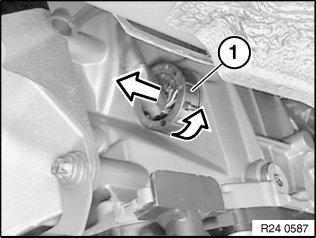</div><br><br><br><br><span class='indent-2'>&#09;</span>^<span class='indent-5'>&#09;</span>Unlock and disconnect plug (1) by turning.<br><span class='indent-2'>&#09;</span>^<span class='indent-5'>&#09;</span>Do not touch pins.<br><span class='indent-2'>&#09;</span>^<span class='indent-5'>&#09;</span>Release cable from retainers.<br><span class='indent-2'>&#09;</span>^<span class='indent-5'>&#09;</span>Insert special tool 24 2 390 in sealing sleeve.<br><br><span class='indent-2'>&#09;</span>Operations are described in<br><br><span class='indent-2'>&#09;</span><b>Notes on mechatronics</b> <br><br><span class='indent-2'>&#09;</span><b>Important!</b><br><span class='indent-5'>&#09;</span>Read and comply with important note.<br><br><div class='oxe-image'>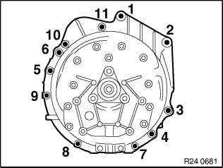</div><br><br><br><br><span class='indent-2'>&#09;</span>Release screws.<br><br><span class='indent-2'>&#09;</span><b>Installation:</b><br><span class='indent-2'>&#09;</span>Observe screw fastening sequence without fail.<br><br><span class='indent-2'>&#09;</span>Tightening torque, steel screws 24 00 1AZ.<br><br><span class='indent-2'>&#09;</span>Aluminium screws must be replaced.<br><br><span class='indent-2'>&#09;</span>Tightening torque and angle of rotation, aluminium screws/bolts 24 00 2AZ.<br><br><div class='oxe-image'>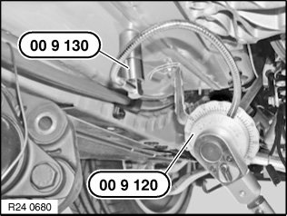</div><br><br><br><br><span class='indent-2'>&#09;</span><b>Installation:</b><br><span class='indent-2'>&#09;</span>Tighten down screws/bolts to specified torque.<br><br><span class='indent-2'>&#09;</span>Secure angle-of-rotation special tool 00 9 120 with magnets 00 9 130 to vehicle underbody and screw down aluminium screws according to angle of rotation.<br><br><span class='indent-2'>&#09;</span>Angle of rotation 24 00 2AZ.<br><br><div class='oxe-image'>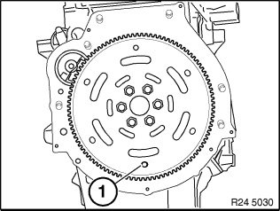</div><br><br><br><br><span class='indent-2'>&#09;</span><b>Installation:</b><br><span class='indent-2'>&#09;</span>Bore (1) in driving disc must be accessible from opening on engine oil sump.<br><br><div class='oxe-image'>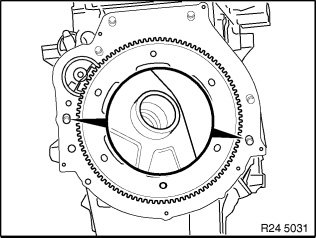</div><br><br><br><br><span class='indent-2'>&#09;</span>Check that dowel sleeves are correctly seated.<br><br><span class='indent-2'>&#09;</span>Replace damaged dowel sleeves.<br><br><div class='oxe-image'></div><br><br><br><br><span class='indent-2'>&#09;</span><b>Installation:</b><br><span class='indent-2'>&#09;</span>Rotate torque converter until bore in torque converter is flush with bore in driving disk.<br><br><span class='indent-2'>&#09;</span>Flange automatic transmission to engine.<br><br><h3>�)�rU�:</h3><div class='oxe-image'>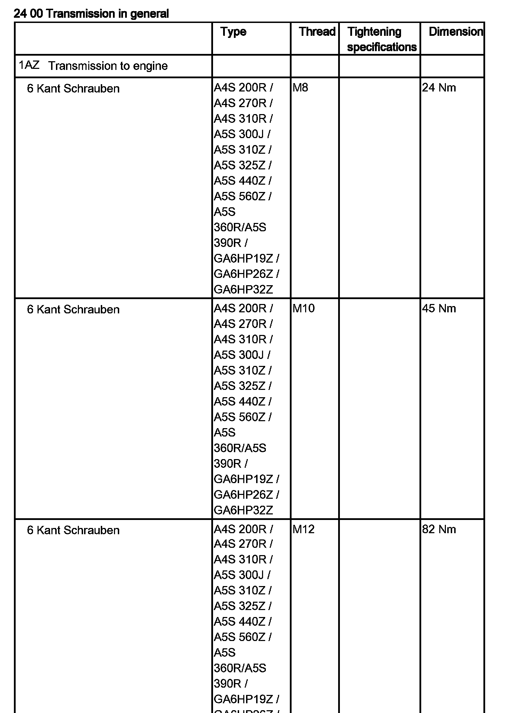</div><br><br><br><div class='oxe-image'>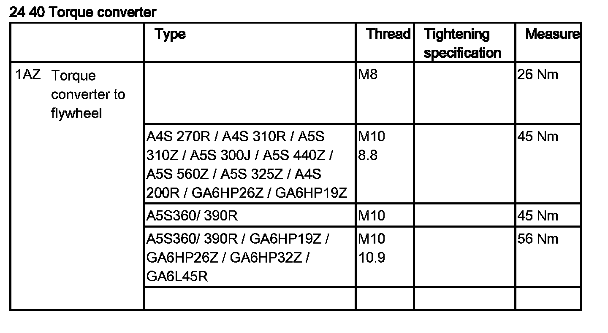</div><br><br><br><h3>��:</h3><div class='oxe-image'></div><br><br><br><div class='oxe-image'>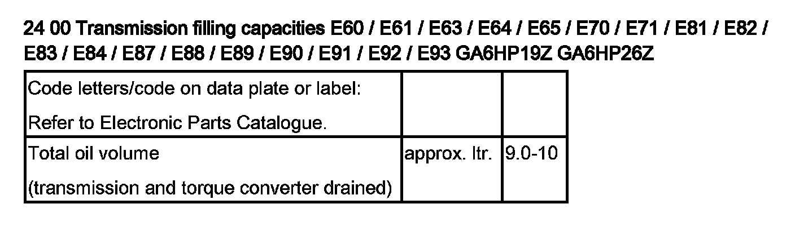</div><br><br><br><div class='oxe-image'>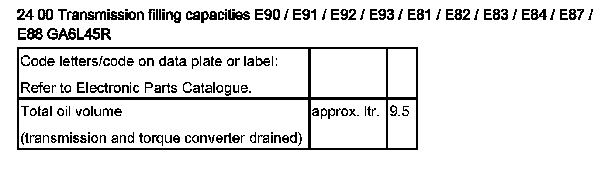</div><br><br><br></div>
<div class="theme-colors footer">
  <i>pro multis</i> · <a href="../about.html">About Operation CHARM</a>
</div>
<script src="../script.js"></script>
</body>
</html>
